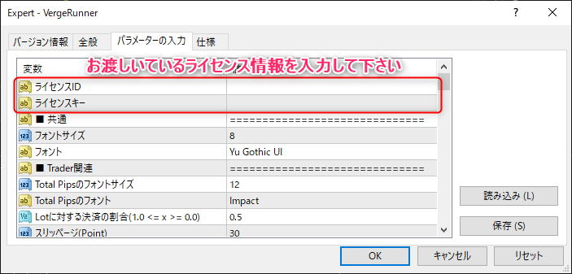

インストールと認証について
VergeRunnerのインストールとライセンス認証の方法について記述しています。
最後までご確認下さい。
インストール
VergeRunner.zipの解凍
VergeRunner.zipを解凍します。
解凍完了後、中に「MQL4」フォルダがあることをご確認下さい。

VergeRunnerの配置
VergeRunnerフォルダを任意のMT4のExpertフォルダに配置します。
MT4を立ち上げ、ファイル > データフォルダを開く をクリック

エクスプローラーが開かれるので、このディレクトリに先ほどのMQL4フォルダを上書きでコピー

MT4を再起動するか、ナビケーターのエキスパートアドバイザーを右クリック > 更新を行い
VergeRunnerが配置されていることを確認して下さい。

以上でインストール完了です。
ライセンス認証
VergeRunnerをご使用になるには、本ツール起動時のライセンス認証が必要になります。
Warning
ライセンスに関する情報は大切に保管して下さい。
また、他者とのライセンス共有は決してされないようにお願い致します。
EAの有効化
まず、自動売買ボタンを押してEAを有効にします。

ライセンス認証
VergeRunnerを任意のチャートにドラッグアンドドロップまたはダブルクリックで配置します。
設定ウィンドウが現れますので下記の設定を行います。

Tips
設定内容は、「保存」ボタンから保存を行うことができます。
起動確認
ライセンス認証を通過しますと、VergeRunnerのGUIが表示されます。

以上でインストールは完了です。